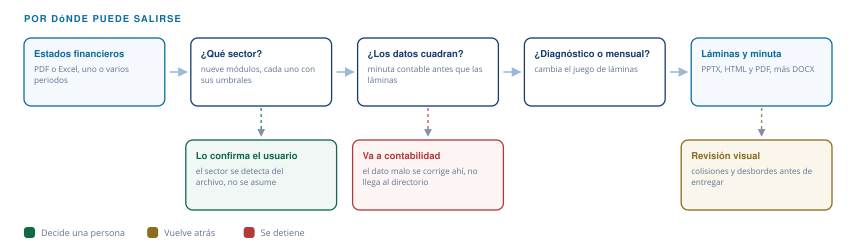

Automatización financiera · Financial Executive Report V4.2.1
Reporte ejecutivo financiero
Un juego de estados financieros entra; salen el reporte que va al directorio y la minuta que va a contabilidad, en una sola corrida. Reemplaza el trabajo de tijera del cierre y agrega lo que ese trabajo nunca alcanza a hacer a fin de mes: auditar el archivo antes de que un número entre a una lámina.
El problema
Armar el reporte mensual de directorio es trabajo de tijera: extraer cifras de un PDF o un Excel, transcribirlas a una plantilla, recalcular ratios, cruzar que el balance cuadre, redactar los comentarios y maquetar las láminas. Se repite en cada cierre y consume los días que deberían ir al análisis.
Y el apuro tiene un segundo costo, más caro que las horas: en esa cadena de transcripción manual nadie audita el archivo de origen. Un encabezado que declara un periodo distinto al que tienen las cifras, una cuenta nueva que rompe la comparación contra el año anterior, un subtotal contado dos veces. Todo eso pasa el cierre sin que nadie lo mire y aparece proyectado en una reunión de directorio, donde discutirlo cuesta credibilidad además de tiempo.
Entra
Balance general y estado de resultados, en PDF o Excel, uno o varios periodos. Las hojas no necesitan tener la misma estructura entre años ni llamarse de ninguna manera en particular.
Sale
El reporte listo para presentar —en pantalla, impreso o editable— y, por separado, la minuta con las inconsistencias que el archivo trae y quién tiene que resolverlas antes de que se presente.
Cómo funciona
Siete pasos, siempre en el mismo orden. La entrevista va primero porque el sector decide qué ratios se calculan; la minuta va antes que los ratios porque un dato malo cuesta mucho más caro en una lámina de directorio que en una hoja de cálculo.

Qué decide, y por qué eso importa
El flujo no es una tubería recta. En tres puntos puede pedir confirmación, devolver el trabajo o detenerse antes de que nada llegue al directorio.

El sector decide qué se mide
La rotación de inventarios manda en una distribuidora y no dice casi nada en una consultora. El flujo elige el juego de indicadores y sus umbrales antes de calcular, y te pide confirmar cuál es: lo detecta del archivo, no lo asume. Es la diferencia entre un reporte que lista todos los ratios que se pueden calcular y uno que pone adelante los que gobiernan tu caso.
Las decisiones quedan fijas
Qué periodo comparar, qué severidad tiene el cuadro, qué distorsión gobierna el caso, qué gráfico cuenta mejor cada lámina. Son decisiones que hoy toma una persona en cada cierre; acá las toma la misma regla todos los meses, así que el reporte de marzo y el de abril son comparables.
Lo que falta se marca
Cuando el dato no está en el archivo sale N/D. No se estima ni se rellena para completar la lámina, y la minuta deja constancia de qué faltó.
Quién escribe qué. Los ratios, el enrutamiento por sector y país y la generación de las tres salidas son código determinista: los mismos datos producen las mismas láminas y las mismas cifras, siempre. Lo que aporta el modelo es la lectura —qué hallazgo gobierna el caso y cómo se redacta el comentario—, no el cálculo. Si el número lo inventara un modelo, esto no serviría para nada.
El caso, de punta a punta
Hasta acá es el plano. Lo que sigue es el flujo corriendo entero, sin intervención manual entre etapas, sobre un juego de estados financieros que parece bueno hasta que se lo mira dos veces. Entra un Excel de cuatro hojas —un balance y un estado de resultados por cada uno de dos ejercicios— de una distribuidora mayorista, con estructuras que no coinciden entre años. Sale todo lo que ves abajo.
Las cuatro cifras del año
- Ventas 2028
- 45,7millones de soles · +8,8 %
- Utilidad operativa
- 2,11millones · −38,0 %
- Resultado neto
- 1,99millones · +10,2 %
- Cobertura de intereses
- 2,60veces · desde 5,31
Léelas juntas: la utilidad operativa se cayó 38 % y el resultado neto subió 10,2 %. Las dos cosas son ciertas al mismo tiempo, y esa es toda la historia del caso.
Los titulares decían buen año. No fue un buen año.
Las ventas suben 8,8 %, el resultado neto sube 10,2 %, el margen neto queda estable y el ratio corriente cruza 1 por primera vez. Cualquiera que lea el estado de resultados por arriba firma que 2028 fue mejor que 2027. El reporte dice lo contrario, y lo sustenta.
La utilidad bruta cayó 3,5 % en soles aunque las ventas subieron: se vendió más y se ganó menos. El margen bruto perdió 210 puntos básicos y el operativo 349. La cobertura de intereses se partió a la mitad. Y las existencias crecieron 24,6 % mientras las ventas crecían 8,8 %: se acumuló inventario más rápido de lo que se vendía.
La mejora del neto sale de la diferencia de cambio, que pasó de una pérdida de 350.000 a una ganancia de 1.240.000. Un swing de 1.590.000 que no viene del negocio. Sin el efecto cambiario, 2028 fue peor que 2027 en todas las líneas. Y esto no lo vio nadie leyendo: lo dispara una regla que compara la dirección del resultado operativo contra la del neto y mide el puente entre los dos. Con ese hallazgo, el diagnóstico general del caso pasó de sano a riesgo.
Así llega al directorio
Ese es el diagnóstico; estas son las ocho láminas donde el reporte lo sostiene. Llegan con la lectura hecha: cada una trae su comentario redactado y el número que lo respalda al lado. No es un tablero que alguien tiene que interpretar el lunes a la mañana, es el material que se presenta el lunes a la mañana. El HTML se recorre en pantalla, el PDF se adjunta al acta y el PPTX se abre para reescribir la lámina que quieras discutir de otra forma.
O recórrelo acá mismo, en vivo:
La minuta contable
Esto es lo que nadie más entrega junto con el reporte. Cualquiera arma láminas; el problema casi nunca es la lámina, es el número que entró en ella. Antes de calcular un solo ratio, el flujo audita el archivo contra sí mismo: que el activo cuadre con pasivo más patrimonio en cada ejercicio, que el resultado del estado de resultados sea el mismo que declara el patrimonio, que el encabezado diga el periodo que las cifras realmente tienen, que el plan de cuentas no haya cambiado de un año al otro sin aviso.
Queda además una pregunta abierta del hallazgo anterior: de dónde salieron los 1,29 millones que perdió el operativo. Parte de la respuesta está acá abajo —una cuenta de 395.000 soles que existe en 2028 y no existía en 2027—, y ahí se ve para qué sirve el segundo documento. Sobre este archivo encontró tres defectos reales y dejó constancia de seis verificaciones que pasaron. Sale en un DOCX escrito para contabilidad, no para el directorio: hechos, números y la acción sugerida al pie de cada observación, sin interpretación de negocio. Este es el documento completo, tal como sale.
Ecuación Patrimonial
Verificado
Total Activo (S/ 23,255,000) = Total Pasivo + Patrimonio (S/ 23,255,000). Cuadra correctamente.
Consistencia EGP ↔ ESF
Verificado
Resultado del Ejercicio coincide entre EGP y ESF: S/ 1,985,844.
Coherencia de Periodos
Advertencia
En 2027, el balance se titula "Al 31 de Diciembre del 2027" pero su columna de datos está rotulada "11/2027".
Acción sugerida Resolver a qué corte corresponde la columna y unificar el rótulo con el título de la hoja.
Advertencia
En 2028 el estado de resultados declara "Al 31/10/2028" mientras el balance declara "Al 31 de Diciembre del 2028". Las cifras del estado de resultados concilian con el balance de cierre.
Acción sugerida Confirmar con contabilidad el corte real del estado de resultados y corregir el encabezado. Si las cifras son de cierre, el encabezado debe decir 31 de diciembre.
Comparabilidad entre Periodos
Advertencia
El ejercicio 2028 reporta 1 cuenta(s) de resultados que no existían en 2027: gastos_de_desarrollo_de_nuevos_negocios (S/ 395,000).
Acción sugerida Confirmar si se trata de un gasto nuevo o de una reclasificación de cuentas existentes. La variación entre periodos no es comparable hasta resolverlo, y el reporte debe llevar la salvedad.
Verificaciones que Pasaron
Verificado
Ecuación patrimonial 2027: activo S/ 20,701,000 = pasivo S/ 14,249,725 + patrimonio S/ 6,451,275.
Verificado
Consistencia 2027: el resultado del estado de resultados (S/ 1,801,275) coincide con el declarado en el patrimonio.
Verificado
Ecuación patrimonial 2028: activo S/ 23,255,000 = pasivo S/ 15,717,881 + patrimonio S/ 7,537,119.
Verificado
Consistencia 2028: el resultado del estado de resultados (S/ 1,985,844) coincide con el declarado en el patrimonio.
Documento generado automáticamente a partir del análisis de los estados financieros. Las observaciones deben ser validadas por el equipo contable antes de tomar acciones correctivas.
Las verificaciones que pasaron están ahí a propósito: una minuta que sólo lista problemas se lee como alarmista; una que además deja constancia de lo que revisó se lee como un control. Y el orden importa —la minuta sale antes que las láminas—, así que si algo no cuadra, el reporte espera. Un dato malo se discute con contabilidad, no en la reunión de directorio.
Lo que resuelve por debajo
Casi todo lo que sigue es una objeción razonable ya resuelta, y por eso no se nota cuando el flujo funciona.
- Tu archivo entra como está. Las hojas se reconocen por el título que llevan adentro, no por el nombre de la pestaña: BG, ERF o Hoja3 da lo mismo.
- Las estructuras que no coinciden entre años no son un problema. Las hojas se agrupan por ejercicio solas. Este mismo caso entró con planes de cuentas distintos entre 2027 y 2028.
- Un balance a dos columnas se lee bien. Activo a la izquierda, pasivo y patrimonio a la derecha, que es como viene la mitad de los cierres peruanos.
- Un gráfico que no cierra no se dibuja. Si los tramos de un puente no suman el total declarado, en lugar del gráfico aparece qué falta mapear. Un waterfall que no cuadra se presenta igual de bien que uno correcto, y ahí está el peligro.
Todo el caso, publicado
Hasta acá te pedí que me creas. Acá está todo lo que hace falta para no hacerlo: la entrada, los intermedios que el flujo escribe entre etapa y etapa, y las salidas. Bajas el Excel, corres el flujo y tienes que obtener el mismo reporte que acabas de leer.
El caso está diseñado, no encontrado
Ninguna cifra proviene de una empresa existente. La estructura de cuentas y las mañas de formato imitan un juego real peruano, pero el caso es sintético a propósito: además de resolver la confidencialidad, permite diseñar el defecto que se quiere poner a prueba. La distorsión cambiaria y los tres problemas de calidad están puestos ahí para ver si el flujo los encontraba. Los encontró.
La empresa, NUTRIANDES DISTRIBUCIONES S.A.C., no existe, y los ejercicios son 2027 y 2028 —futuros a propósito— para que nadie los confunda con algo real. El generador verifica sus propias invariantes contables al correr, así que el caso se puede reconstruir desde cero.
Entrada
caso_sintetico.py — define el caso y verifica la ecuación patrimonial
generar_xlsx.py — escribe el Excel imitando el layout real
caso_demo.xlsx — el archivo de entrada
Intermedios
data.json — datos extraídos, dos periodos
ratios.json — ratios y variaciones
slide_plan.json — plan de láminas y distorsiones
Salidas y flujo
reporte.html · reporte.pdf ·
reporte.pptx
minuta_contable.docx
el flujo completo ·
registro de cambios
Límites
Con los archivos a la vista corresponde decir también dónde se termina el flujo, porque el caso publicado no lo muestra.
Lo que todavía no hace
- No compara contra presupuesto. Hoy sólo lee estados financieros. Es la mejora de mayor valor pendiente: control de gestión lo pide de manera explícita.
- No tiene tests automatizados todavía. El generador del caso verifica sus invariantes al correr, pero el flujo en sí no tiene suite de regresión. Este caso sintético es el insumo natural para armarla —entrada fija, salida esperada conocida— y es lo siguiente.
- La capa de país es sólo Perú. Las observaciones normativas de la minuta y las alertas regulatorias no aplican fuera de ese marco.
- El control visual de las láminas es asistido, no automático. Colisiones de texto y formato de negativos se revisan sobre la salida rasterizada.
- Se probó sobre un archivo diseñado a propósito. Entró con estructuras que no coinciden entre años y con las abreviaturas que se usan en Perú, pero eso no es lo mismo que decir que lee cualquier Excel.
Si tu cierre se parece a este
Todo lo de arriba salió de una corrida sobre un archivo que ni siquiera estaba prolijo. Si armas reporte de directorio todos los meses ya sabes cuál es la parte que no te deja analizar: no es pensar, es transcribir, cuadrar y maquetar. Y ya sabes que nadie audita el archivo antes de que las cifras entren a la lámina.
Mándame un juego de estados financieros tuyo, o descríbeme el proceso, y te digo qué parte de esto aplica tal cual, qué parte hay que adaptar a tu sector y tu plan de cuentas, y qué no se puede automatizar. Si la respuesta es que no te sirve, te lo digo ahí.